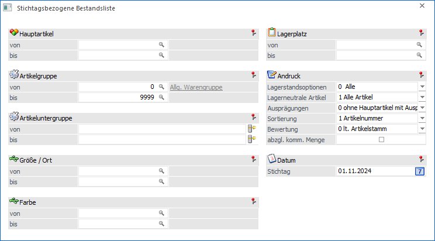
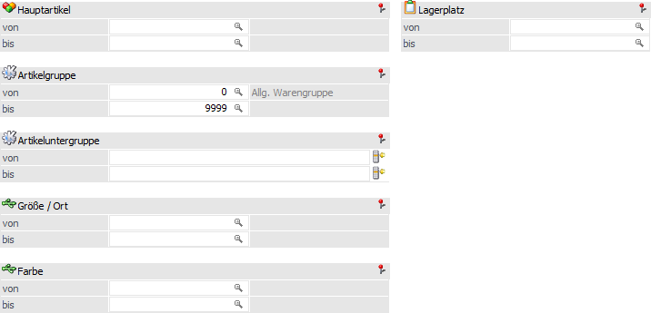
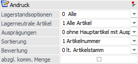
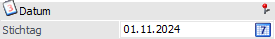
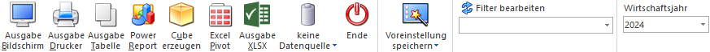

Im Menüpunkt…
1 WinLine FAKT
1 Auswertungen
1 Artikellisten
1 Stichtagsbezogene Bestandsliste
… erhält man eine Bestandsliste mit dem Lagerstand und Lagerwert zu einem bestimmten Stichtag.

Die Ausgabe kann durch folgende Kriterien eingeschränkt bzw. beeinflusst werden:
Selektion

Ø Hauptartikel von / bis
An Einschränkung der Artikelnummern, die ausgegeben werden sollen.
Ø Artikelgruppe von / bis
In diesen Feldern kann nach den Artikelgruppen eingeschränkt werden, welche in der Bestandsliste berücksichtigt werden sollen.
Ø Artikeluntergruppe von / bis
An dieser Stelle kann nach den Artikeluntergruppen eingeschränkt werden. Bleiben die Felder leer, so werden alle Artikel aller Artikeluntergruppen in der stichtagsbezogenen Bestandsliste berücksichtigt.
Ø Ausprägung 1 von / bis (hier "Größe / Ort")
Zusätzlich kann eine Einschränkung auf die Ausprägung 1 vorgenommen werden.
Ø Ausprägung 2 von / bis (hier "Farbe")
Neben Ausprägung 1 kann auch eine Einschränkung auf die Ausprägung 2 vorgenommen werden.
Ø Lagerplatz von / bis
An dieser Stelle kann eine Einschränkung aufgrund des Lagerplatzes (betrifft das Feld "Lagerplatz" im Artikelstamm, Register "Text") erfolgen.
Andruck

In diesem Bereich können der Inhalt bzw. die Berechnung der Ausgabe beeinflusst werden. Alle Einstellungen werden benutzerspezifisch gespeichert.
Ø Lagerstandsoptionen
An dieser Stelle kann mit Hilfe einer Auswahlliste definiert werden, welche Artikel - aufgrund des Lagerstands bzw. der Lagerbewegungen - in der Bestandsliste berücksichtigt werden sollen.
ü 0 - Alle Artikel
Es werden alle
Artikel berücksichtigt.
ü 1 - mit Lagerbewegung
Es werden
alle Artikel ausgewertet, die im Lager zumindest einmal bewegt wurden. Dabei
wird der Lagerstand nicht berücksichtigt. Jedoch ist hierbei zu beachten, dass
Artikel, die mit derselben Buchungsart und selben Menge zu und wieder abgebucht
werden, dadurch einen Lagerstand von 0 haben, nicht in dieser Einschränkung
ausgegeben / berücksichtigt werden!
ü 2 - mit Lagerstand größer 0
Es
werden alle Artikel ausgewertet, die einen positiven Lagerstand haben. Dabei
werden Artikel, die zwar Lagerbewegungen aufweisen, aber deren Lagerstand 0 ist,
nicht berücksichtigt.
ü 3 - mit Lagerstand ungleich
0
Hier werden alle Artikel angedruckt, deren Lagerstand nicht 0 ist, also
auch Artikel, die einen negativen Lagerstand (lagerneutrale Artikel)
aufweisen.
ü 4 - mit Lagerstand kleiner
0
Hier werden alle Artikel angedruckt, deren Lagerstand kleiner 0 ist.
ü 5 - mit Lagerstand gleich 0 und
Lagerwert ungleich 0
Hier werden alle Artikel angedruckt, deren Lagerstand
zwar 0 ist, die jedoch einen Lagerwert aufweisen (egal ob dieser negativ oder
positiv ist).
ü 6 - mit Lagerstand gleich 0
(unabhängig vom Lagerwert)
Hier werden alle Artikel angedruckt, deren
Lagerstand 0 ist, unabhängig davon wie hoch der Lagerwert ist.
Ø Lagerneutrale Artikel
Mit Hilfe einer Auswahlliste kann angegeben werden, wie mit Lagerneutralen Artikel zu verfahren ist. Folgende Varianten stehen zur Verfügung:
ü 1 - Alle Artikel
ü 2- Nur lagerneutrale Artikel
ü 3 - Keine lagerneutralen Artikel.
Ø Ausprägungen
Die Combobox "Ausprägungen" enthält folgende Auswahlmöglichkeiten:
ü 0 - ohne Hauptartikel mit
Ausprägungen
Es werden - wie bisher - nur Hauptartikel ohne Ausprägungen und
Ausprägungen selbst angezeigt. Hauptartikel mit Ausprägungen werden nur
angedruckt, wenn die Ausprägungen keinen eigenen Lagerstamm haben oder für den
Hauptartikel noch keine Ausprägungen vorhanden sind. In so einem Fall erden
jetzt auch Eröffnungsbuchungen, die nur den Hauptartikel betreffen,
berücksichtigt.
ü 1 - nur Hauptartikel
Es werden
nur Hauptartikel, aber keine Ausprägungen angedruckt.
ü 2 - Hauptartikel und
Ausprägungen
Es werden die Hauptartikel als Hauptzeilen angedruckt und
summiert. Unterhalb des Hauptartikels werden die einzelnen Ausprägungen in blau
angedruckt.
Hinweis
Um eine korrekte Summenbildung zu garantieren, werden bei einer BI-Ausgabe (z.B. Cube erzeugen), im Gegensatz zu einer Formularausgabe (Bildschirm / Drucker), die Ausprägungen ohne Werte (Lagerstand bzw. Lagerbewertung) dargestellt, da die Werte bereits über die Hauptartikel zur Verfügung stehen!
Ø Sortierung
Die Bestandsliste kann nach folgenden Kriterien sortiert werden:
ü 1 - Artikelnummer
ü 2 - Artikelbezeichnung
ü 3 - Artikelgruppe
ü 4 - Lagerplatz
ü 5 - Artikeluntergruppe
Ø Bewertung
Die Bewertung der stichtagsbezogenen Bestandsliste kann nach den folgenden Varianten erfolgen:
ü 0 - lt. Artikelstamm erfolgen (d.h. nach der Einstellung im Register Lager im Feld Lagerbewertung)
ü 1 - nach dem Einstandspreis
ü 2 - nach dem letzten Einkaufspreis
ü 3 - nach dem niedrigsten Einkaufspreis
ü 4 - nach dem letzten Einkaufspreis + Bezugskosten (es werden die Bezugskosten pro Stück berücksichtigt, wenn im Artikelstamm - Register "Lager" - ein Eintrag vorhanden ist; sonst wird der BNK-Prozentsatz aus der Artikelgruppe berücksichtigt)
ü 5 - allgemeiner Einkaufspreis
Ø abzgl. komm. Menge
Wird diese Option aktiviert, so werden bei der Berechnung des Lagerstandes auch die Kommissionierungszeilen berücksichtigt.
Datum

Ø Stichtag
In diesem Feld erfolgt die Definition des Stichtages, zu welchem die Lagerstände und Lagerwerte berechnet werden sollen.
Hinweis
Bei der Berechnung werden jene Bewegungen, die am Stichtag selber passiert sind, berücksichtigt.
Buttons

Ø Ausgabe Bildschirm
Mit Hilfe des Buttons "Ausgabe Bildschirm" oder der Taste F5 wird die Auswertung am Bildschirm ausgegeben.
Ø Ausgabe Drucker
Durch Anwahl des Buttons "Ausgabe Drucker" wird die Auswertung am Drucker ausgegeben.
Ø Ausgabe Tabelle
Bei der Anwahl des Buttons "Ausgabe Tabelle" wird die Bestandsliste in Form einer WinLine Tabelle dargestellt (nähere Informationen entnehmen Sie bitte dem Kapitel Bestandsliste Tabelle).
Ø Power Report
Durch Drücken des Buttons "Power Report" wird die Auswertung auf Basis einer Datenquelle grafisch dargestellt. Die Ausgabe ist individuell anpassbar und erfolgt in der Form von "Widgets", die unterschiedlichste Darstellungen ermöglichen.
Ø Cube erzeugen
Bei Anwahl des Buttons "Cube erzeugen" wird die Bestandsliste im "Olap Viewer" angezeigt. In diesem können die Daten nach verschiedenen Gesichtspunkten (Dimensionen und Fakten) ausgewertet werden.
Ø Excel Pivot
Durch Anwahl des Buttons "Excel Pivot" wird die Auswertung in Form einer Pivot Ausgabe in Microsoft Excel (2007 oder höher) angezeigt.
Ø Ausgabe XLSX
Mit Hilfe des Buttons "Ausgabe XLSX" wird die stichtagsbezogene Bestandsliste an Microsoft Excel übergeben.
Ø Datenquelle
Mit Hilfe dieser Auswahl kann definiert werden, ob und wie eine Datenquelle (d.h. ein Snapshot oder eine MasterView) verwendet werden soll.
ü Keine Datenquelle
Bei Auswahl
von "keine Datenquelle" wird keine zuvor angelegte Datenquelle genutzt. D.h. die
Daten werden von der WinLine "live" ermittelt und in der gewünschten Form
ausgegeben.
Hinweis
Da die BI-Ausgabe (z.B. Cube oder Power Report) immer eine Datenquelle benötigt, wird im Hintergrund eine temporäre Datenquelle (Snapshot) gebildet.
ü Datenquelle
erstellen/aktualisieren
Die Daten werden zur Laufzeit ermittelt und an einen
zu definierenden Snapshot übergeben. Nach dem Füllen der Datenquelle wird die
gewünschte Ausgabevariante über die Datenquelle erzeugt. Dieser Vorgang kann mit
einer Zeitverzögerung verbunden sein, da die Daten zusätzlich gespeichert werden
müssen.
ü Datenquelle verwenden
Bei der
Verwendung eines Snapshots werden die Daten direkt aus der Datenquelle gelesen,
d.h. die für die Ausgabe benötigten Daten können ohne Verzögerung in der
gewünschten Variante ausgegeben werden.
Wird hingegen eine MasterView
gewählt, so werden die Daten für die Ausgabe "live" ermittelt, wobei diese so
aktuell sind wie die zugrunde liegenden Datenquellen.
Hinweis
Der Button "Datenquelle verwenden" wird nur angeboten, wenn für diesen Bereich (bezogen auf den aktuellen Benutzer / Mandanten) zumindest eine private oder öffentliche Datenquelle existiert. Des Weiteren stehen die Ausgabevarianten "Ausgabe Bildschirm", "Ausgabe Drucker" und "Ausgabe Tabelle" nicht zur Verfügung.
Hinweis
Weitere Informationen zum Thema "Datenquellen" entnehmen Sie bitte dem Kapitel "Die Datenquelle".
Ø Ende
Durch Drücken des Buttons "Ende" bzw. der Taste ESC wird das Fenster geschlossen.
Ø Voreinstellung speichern
Durch Anwahl dieses Buttons erfolgt eine benutzerspezifische Speicherung aller im Fenster getätigten Einstellungen. Diese sogenannten "Voreinstellungen" können jederzeit wieder abgerufen werden und ermöglichen dadurch ein schnelleres und zielorientierteres Arbeiten (nähere Informationen entnehmen Sie bitte dem Kapitel "Die Voreinstellungen").
Ø Filter bearbeiten
Durch Anklicken des Buttons "Filter bearbeiten" kann die Bestandsliste nach frei definierbaren Kriterien eingeschränkt werden.
Ø Wirtschaftsjahr
Aus der Auswahllistbox kann das Wirtschaftsjahr gewählt werden, für das die Auswertung erfolgen soll. Damit können die Daten aus den Vorjahren angezeigt werden, ohne dass das Fenster geschlossen und ein manueller Wirtschaftsjahreswechsel vorgenommen werden muss.